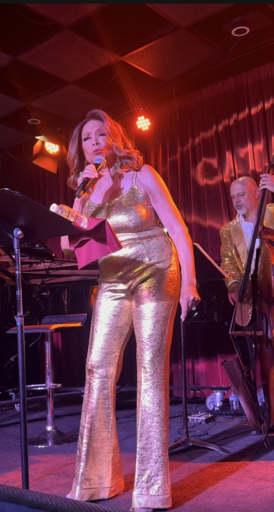
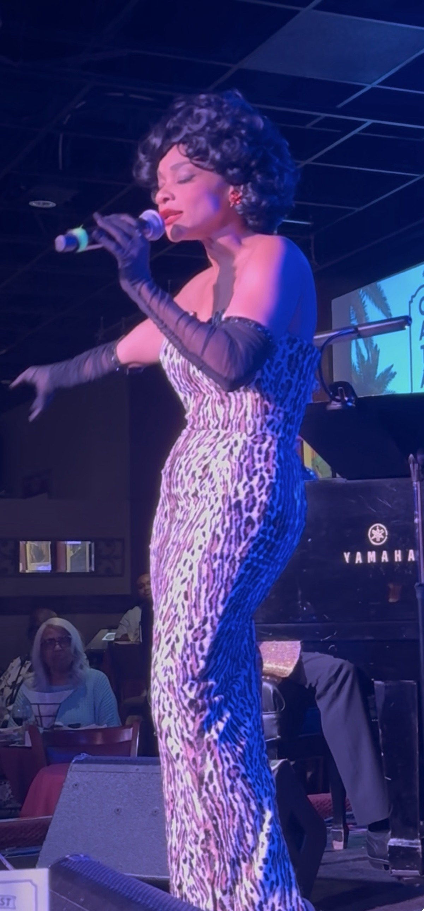
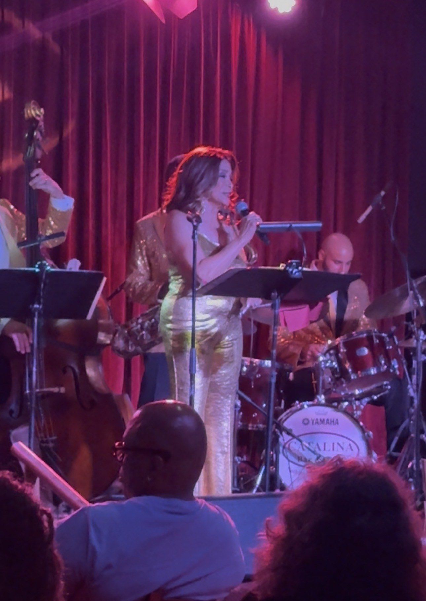
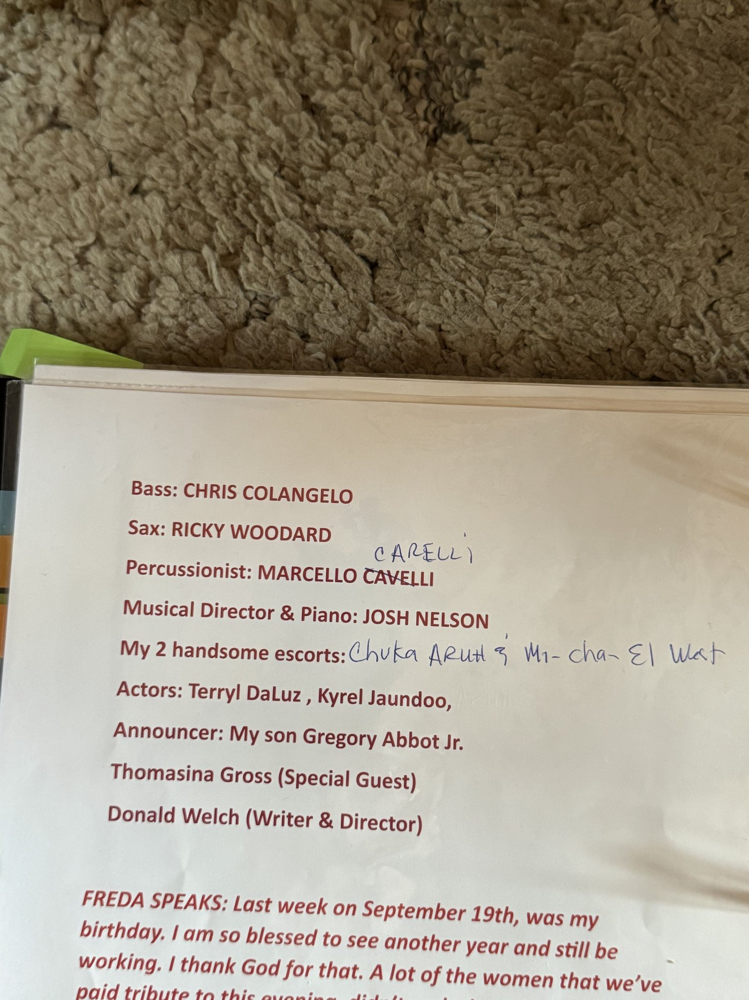
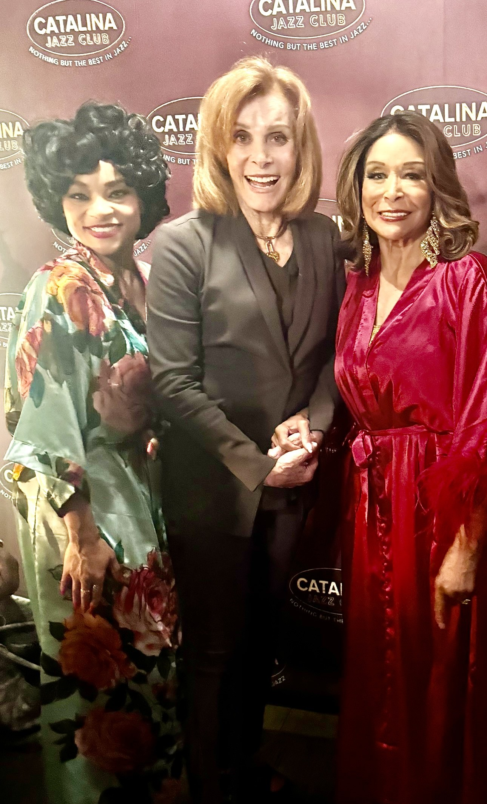

Freda Payne Set Hollywood on Fire
On VMAs weekend, with every camera in Los Angeles pointed at the Peacock Theater, the hottest ticket in the city was a sold-out jazz room on Sunset — and an 84-year-old legend in gold lamé who sang her heroes back into the room.

Black lace, cut to the floor. A red curtain behind her, a bass player in gold at her shoulder, and a microphone held the way only somebody who has done this for sixty years holds one.
Freda Payne is eighty-four years old. She walked out on Sunset Boulevard on Saturday night and took the room.
That is the photograph. That is also the review, and everything after this is elaboration.
Hollywood has not stopped talking about it since.
This was not a tribute show. This was testimony.
The distinction is the whole evening. A tribute show is a singer doing impressions of the dead. Freda Payne Portrays and Honors Legendary Ladies of Song, which sold out Catalina Jazz Club on Saturday night, was a woman singing about people she had stood next to — who had frightened her, taught her, been kind to her when she was young and nobody yet.
Ella Fitzgerald. Sarah Vaughan. Dinah Washington. Lena Horne. Nancy Wilson. Peggy Lee. Gloria Lynne. Dakota Staton. Eartha Kitt.
Nine women. She knew a good many of them. You could hear it in every bar.
Donald B. Welch built the room she needed
Credit where the evening starts. Donald B. Welch — playwright, director, producer — wrote and directed this, presented it under the Don B. Welch banner, and had the idea in the first place. He and Payne have been friends for years. It was Welch who pushed.
Here is what Welch understood, and what most producers of this kind of show never work out: the star's memory is the material. He did not build a revue and hire Freda Payne to front it. He built a frame around what she already carried, then got out of the way.
And he staged it properly. Costume changes. Scene work. Actors. A table, two martinis and a candle for the Eartha Kitt sequence. Dancers for “Fever.” This is a produced piece of theatre with a band in it, not a cabaret set with patter between numbers, and the difference is money and craft on the stage where an audience can see it.


The Fever
Peggy Lee's song, in gold lamé, on Payne's own birthday weekend, with two dancers brought up onto the stage. Red light coming down like heat.

She does not hurry it. That is the thing to understand about the number and about the woman. There is no scramble in it, no proving. She lets the bass walk, lets the room lean in, and plays the whole thing at exactly the tempo she wants.
That is not an artist paying respects to a legend. That is an artist reminding a room that she is one.
The house came apart. Not polite-jazz-club applause — the other kind, the kind that arrives before the last note has cleared and does not stop when it should.
The songs, and where they came from
She opened with “How High the Moon” — Ella's, by way of Ella in Berlin — and Payne is scrupulous about the credit: the song is a standard, but Ella's reading is the one carved in stone.
- “How High the Moon”Ella Fitzgerald
- “I Wish You Love”Gloria Lynne
- “The Late Late Show”Dakota Staton
- “Body and Soul”Sarah Vaughan
- “Guess Who I Saw Today”Nancy Wilson
- “Fever”Peggy Lee
The Dakota Staton number is where the evening cracked open. “The Late Late Show” sent Payne back sixty-odd years in four bars, and afterwards she could still walk you there:
You cannot rehearse that. A sixteen-year-old at Idlewild, allowed into the matinee and not the midnight show, hearing Dakota Staton and deciding something permanent about her own life. That girl was on the Catalina stage on Saturday, inside a woman in gold lamé.
The ones she knew
Sarah Vaughan she met, and came to know. She describes the voice the way a musician would, not a fan:
She sang “Body and Soul” for Sarah, with the caveat that Sarah did everything.
Lena Horne got the sharpest read of the night. Known for her beauty, Payne said, her class, her style — and then, without a breath: “She wasn't a pussycat kind of a woman. She was like, don't mess with me, buddy.” Tough. And of all of them, the most beautiful.
Nancy Wilson got “Guess Who I Saw Today,” the only possible choice, and Payne knows exactly why: “The moment you hear her voice, you know it's Nancy Wilson.”
Then Dinah Washington, who Payne met young and was frightened of.
Washington died at thirty-nine. Payne says it flatly and moves on, which lands harder than dwelling on it ever could.
Thomasina Gross does not do an impression of Eartha Kitt

Thomasina Gross opened the show and walked off with a considerable piece of it. Payne's own description is the one to use, because watching it, it is simply accurate:
Spot on is right, and it is the hardest note in the show to hit. Eartha Kitt is the most imitated woman in American entertainment and almost every imitation is a cartoon — the purr, the rolled vowels, the punchline. Gross plays the spine: the poise, the cool, the danger sitting underneath the flirtation. Leopard print, black opera gloves, and not one wink at the audience.

The table scene is the proof. Anybody can put on the wig. Playing Eartha Kitt seated, still, doing almost nothing, and holding a room that size — that is acting, and Gross can do it. She does not send Eartha Kitt up. She stands her back up.
Gregory Abbott Jr. hosted, and knew exactly what the night was


Gregory Abbott Jr. hosted and announced. He introduced Thomasina Gross, he introduced his mother, and he carried the room between numbers with the ease of a man who has been standing in the wings of rooms like this his entire life.
Payne made a point of it twice in conversation afterwards, unprompted — the second time cutting herself off mid-sentence to make sure he got his due. Anyone who has watched a parent watch their child work will know exactly what that sounded like.
The band was not decoration

Josh Nelson was musical director from the piano, and Payne's verdict is unqualified — there are a lot of good pianists, and he is one of the best. It shows in arrangements that never once let the evening slide into lounge. Chris Colangelo on bass, holding the low end like a man with nothing to prove. Ricky Woodard on saxophone — the Ricky Woodard, as Payne put it, and anybody who has spent a night in a Los Angeles jazz room knows the definite article is doing real work there. Marcello Carelli on drums, playing the room rather than the kit.
Actors Terryl DaLuz and Kyrel Jaundoo filled out the staging, with Chuka Aruh and Mi-cha-El Wat as escorts.

The room, and the weekend

Stefanie Powers came out. So did Loretta Devine. And they were nowhere near the only ones.
Look down any row at Catalina on Saturday and you were looking at a face you knew — screen actors, recording artists, directors, industry people who do not go out on a Saturday unless the night is worth it. Nobody worked the room, because everybody in the room was somebody. They had come to watch, not to be watched, which in this town is the highest compliment an audience can pay a performer.
Now consider the timing, because it is the whole story. This was VMAs weekend. Every camera in Los Angeles was pointed downtown at the Peacock Theater. Every publicist in the city was working a carpet. Madonna was opening a show for the first time in twenty-three years across town.
And the hottest ticket in town — the one that sold out, the one that filled with famous people who could have been anywhere — was a jazz room on Sunset Boulevard, where a woman in gold held a sold-out room's undivided attention with a standard written in 1940.
That is not nostalgia. That is the market telling you something.
What a birthday looks like
Payne turned a year older on September 19, one week before the show. From the stage she said she was blessed to see another year and still be working, thanked God for it, and turned to the women being honoured that night.
Dinah Washington, one of the women honoured that night, was thirty-nine when she died. That is the whole sentence.
Freda Payne opened her new birthday year with a sold-out house on Sunset Boulevard, in gold, singing her heroes back into the room, with her son calling her name.
She set the town on fire. There is no other way to file it.
Next
Payne sails at the end of October aboard Holland America, performing on a cruise out of Fort Lauderdale to Puerto Rico and back, on a bill that also carries Darlene Love and Wayne Newton.
And Legendary Ladies of Song should not stop here. On Saturday's evidence this is a touring production — a real one, with a book, a company and a star who can carry a far bigger house than this one. Somebody with a theatre and a chequebook was almost certainly sitting in that room. They should move.
If it comes back around, do not wait for the review. It sold out this time, and it will sell out faster next time.
Watch: from the stage at Catalina
- Production
- Freda Payne Portrays and Honors Legendary Ladies of Song
- Presented by
- Don B. Welch
- Written & directed by
- Donald B. Welch
- Starring
- Freda Payne
- Special guest
- Thomasina Gross as Eartha Kitt
- Host & announcer
- Gregory Abbott Jr.
- Actors
- Terryl DaLuz · Kyrel Jaundoo
- Escorts
- Chuka Aruh · Mi-cha-El Wat
- Musical director & piano
- Josh Nelson
- Bass
- Chris Colangelo
- Saxophone
- Ricky Woodard
- Drums
- Marcello Carelli
- Honouring
- Ella Fitzgerald · Sarah Vaughan · Peggy Lee · Gloria Lynne · Dakota Staton · Lena Horne · Nancy Wilson · Dinah Washington · Eartha Kitt
- Venue
- Catalina Jazz Club, 6725 Sunset Blvd, Los Angeles, CA 90028
- Date
- Saturday, September 26, 2026 · 8:30 p.m. · Sold out
- Photographs
- Terry Bryant, Newswire Hollywood
Quotations are from an interview with Freda Payne conducted by Newswire Hollywood following the performance. All photographs by Terry Bryant, Newswire Hollywood staff. © Newswire Hollywood — reproduction by permission only.